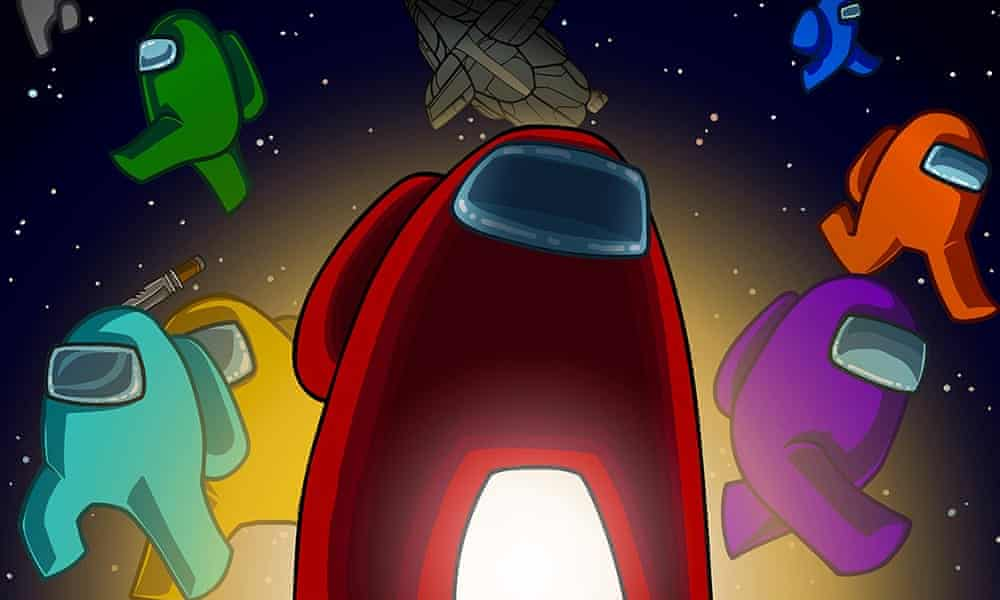
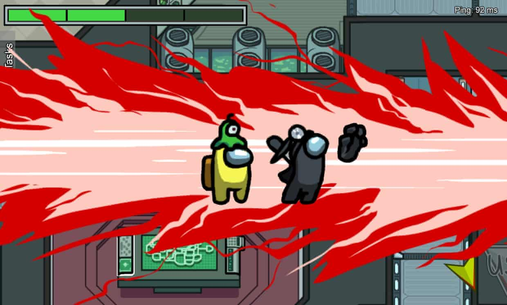
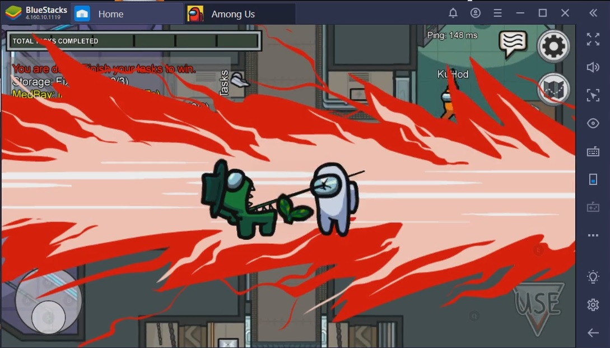

|  There are 10 crew members trapped on a spacecraft, carrying out menial tasks to maintain vital systems, but at least one of them is an imposter who wants to sabotage their work and if possible, murder them. What sounds like the premise of a particularly bleak science-fiction movie is in fact the set-up of one of the most popular video games of the year. Developed by a three-person team at InnerSloth and launched to virtual obscurity in 2018, Among Us has suddenly become one of the biggest games on PC and mobile, attracting more than 85m players in the last six months. It’s so successful, InnerSloth recently abandoned plans to work on a sequel, instead piling their resources into the original. No one, it seems, is more surprised about the success of this game than its creators. So why has this happened? Among Us is essentially an online multiplayer version of the party game wink murder, but set on a constantly malfunctioning spaceship. Up to 10 players take part, and at the beginning, you’re told whether you’re an innocent crew member or an imposter. While the former carry out jobs such as rebooting the communications systems or cleaning out the air ducts, the latter stalk the corridors breaking vital equipment or looking for victims to kill. When a crew member discovers a body, they call a meeting, at which point all the players are allowed to talk to each other for a limited time. |  During these discussions, the crew needs to try to work out the identity of the imposter(s) by comparing alibis and reporting on which other players seem to have been acting suspiciously: what was Tim doing so close to the scene of the crime, and why can’t Emma recall what task she was apparently working on? Accusations fly, temporary alliances form and whopping lies are told. Sessions can often descend into anarchic shouting matches, with players frantically justifying their movements around the ship. Then a vote takes place, one player is hurled from the spaceship’s air locker, and the others discover if they’ve just saved themselves from certain death or murdered an innocent workmate. As the game continues, the paranoia ramps up. Crew members can use security cameras to spy on others, while imposters can use air ducts to sneak around. Although there are traditional video game objectives to fulfil – the crew members can win the game if they complete all their allotted tasks before everyone is dead – this is essentially a game about acting; or, more accurately, it’s a game about lying to your friends. (You can play against strangers but it’s not as fun and there are a LOT of cheats out there.) The beauty of the game is the way in which it allows players to exploit the personality traits of their peers, tapping in on the neuroses of anxious players to create plausible guilt scenarios, or flattering egotists so that they don’t suspect you. |  In short, this is all the fun of a slightly drunken board game night, but virtual, which makes it perfect for the semi-lockdown situation a lot of us are in right now. After months of this horror, we’re ready for something more cynical and spiteful, something more akin to the end of a game night, where players are seconds from dropkicking the Trivial Pursuit board into next door’s garden. There is, you may have spotted, something particularly 2020 about Among Us. Its emphasis on fabrication, on blame-shifting, and on reporting other people to the authorities is extremely on point. As writer Sean Sands points out in an article, “Among Us is rife with ever-cascading crises, and people trapped in a sense of isolation while they try to solve problems for which they are woefully unequipped. Into this crumbling world the game introduces a dash of bad-faith actors whose purpose – as much as open violence – is to sow distrust and distraction.” Frankly, when smiley Zoom chats start to grate, Among Us will be there, ready to whisk you into your own private version of The Thing, where the chat isn’t about who’s gotten into sourdough or knitting, but whether or not Kev was the one who sabotaged the oxygen supply and should therefore be jettisoned into the cold vacuum of space. In this age of widespread home working, Among Us simulates the only part of office life that most of us secretly miss: gossip and in-fighting. If 2020 is putting a strain on your relationships, Among Us could be the ultimate test – or, the final push. |